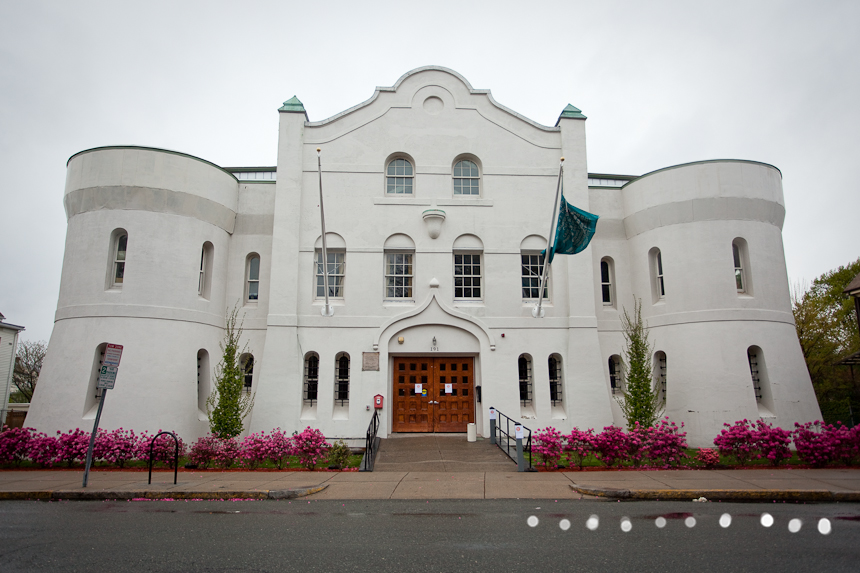

Your tax-deductible contribution, in any amount, helps make affordable art, cultural and community programs and activities possible at the Center for Arts at the Armory.
Help us continue to make arts accessible to the community!

We are also on the lookout for the items; If you have an extra you can spare, we'd love to take it off your hands! All donations are tax-deductible.